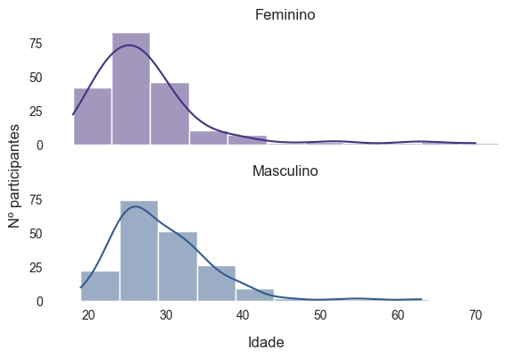

Big Brother Brasil - Uma análise exploratória com Python
Introducao
O Big Brother Brasil (BBB) é um dos maiores reality shows transmitido em TV aberta no Brasil. Criado em 1999, nos EUA, o programa é baseado no personagem ficticio “Grande Irmão”, do livro distópico “1984” (George Orwell). A ideia do programa é se aproximar da obra de Orwell criando, durante 3 meses, um ambiente ultra vigiado e controlado 24 horas por dia.
Semanalmente, os participantes passam por desafios que podem trazer recompensas, como as provas do lider, ou punições, como o castigo do anjo. Aos domingos, todos os participantes votam entre si e a pessoa mais votada pela casa, junto com o indicado pelo lider, vão para votação popular (“paredão”), onde o público decide quem será eliminado. Essa dinâmica de votação/eliminação semanal continua até restarem apenas 3 participantes. O campeão é então selecionado pelo público e recebe o prêmio de um milhão de reais.
Este relatório tem como objetivo explorar quais são as caracteristicas mais comuns nos candidatos selecionados para o programa, criando um perfil do que seria o “candidato ideal” para ser selecionado no BBB.
Se já passou pela sua cabeça ser um “brother” ou “sister”, essa análise exploratória pode te ajudar a decidir se está na hora de se inscrever no programa e, quem sabe, se tonar milionário (ou pelo menos receber o célebre título de ex-bbb).
Semanalmente, os participantes passam por desafios que podem trazer recompensas, como as provas do lider, ou punições, como o castigo do anjo. Aos domingos, todos os participantes votam entre si e a pessoa mais votada pela casa, junto com o indicado pelo lider, vão para votação popular (“paredão”), onde o público decide quem será eliminado. Essa dinâmica de votação/eliminação semanal continua até restarem apenas 3 participantes. O campeão é então selecionado pelo público e recebe o prêmio de um milhão de reais.
Este relatório tem como objetivo explorar quais são as caracteristicas mais comuns nos candidatos selecionados para o programa, criando um perfil do que seria o “candidato ideal” para ser selecionado no BBB.
Se já passou pela sua cabeça ser um “brother” ou “sister”, essa análise exploratória pode te ajudar a decidir se está na hora de se inscrever no programa e, quem sabe, se tonar milionário (ou pelo menos receber o célebre título de ex-bbb).
Dados
Origem
Os dados utilizados nesta análise foram compilados através de scraping das páginas da Wikipédia referentes às 23 edições do programa (incluindo a edição de 2023). O código e os dados utilizados podem ser encontrado aqui.
Conhecendo os dados
data.shape(384, 9)A nossa base é composta por 384 linhas e 9 colunas. As linhas representam todos os participantes das ediçoes de 1 a 23 e as colunas representam algumas informações referentes a esses participantes:
- nome: nome completo do participante
- genero: gênero do participante - para facilitar a analise, adotou-se uma classificação binária (male/female)
- data_nascimento: data de nascimento (YYYY-MM-DD)
- idade_participacao: idade do participante no inicio da edição
- ocupacao: profissão (em alguns casos há de uma profissão)
- municipio (str): municipio de nascimento
- estado (str): estado de nascimento
- classificacao (int): colocação final no programa (1 = 1º lugar, 2 = 2º lugar, etc)
- edicao (int): nº da edição
data.sample(5)| nome | genero | data_nascimento | idade_participacao | ocupacao | municipio | estado | edicao | classificacao | |
|---|---|---|---|---|---|---|---|---|---|
| 40 | Thiago Lira dos Santos | male | 1982-06-08 | 21.0 | Auxiliar de contas | São Gonçalo | Rio de Janeiro | 4 | 2.0 |
| 59 | Aline Cristina Tertuliano dos Santos | female | 1985-10-04 | 19.0 | Estudante | Rio de Janeiro | Rio de Janeiro | 5 | 8.0 |
| 73 | Iran Alves Gomes da Silva | male | 1976-08-02 | 29.0 | Compositor | Rio de Janeiro | Rio de Janeiro | 6 | 6.0 |
| 256 | Daniel Fabiano Fontes | male | 1975-06-01 | 41.0 | Agente de trânsito | Ferraz de Vasconcelos | São Paulo | 17 | 7.0 |
| 322 | Filipe Kartalian Ayrosa Galvão (Fiuk) | male | 1990-10-25 | 30.0 | Ator e cantor | São Paulo | São Paulo | 21 | 3.0 |
Exploração
Idade
Vamos iniciar nossa análise verificando qual a distribuição de idade dos participantes selecionados para o programa.

Nota-se que a curva da distribuição é assimétrica positiva, ou seja, os valores se concentram a esquerda da escala. Isso demonstra que há mais candidatos entre 20 e 40 anos do que 40 a 70 anos. Podemos verificar se isso também ocorre ao comparar as idades em relação ao gênero.

Como no caso anterior, ainda há uma predominancia de participantes entre 20 e 40 anos. Além disso, é possível notar que, no caso de pessoas do gênero feminino, a curva está ainda mais enviesada para a esquerda. Podemos concluir que pessoas do gênero feminino tendem a entrar na casa com idades inferiores às de gênero masculino.
E em relação as temporadas, será que a idade dos participantes costuma variar de acordo com a edição?

Algumas edições, como a 1ª ou a 11ª, apresentaram baixíssima variação de idade, tendo 75% dos participantes com até 30 anos. Já a edição 16 foi a que apresentou maior variação de idade, tendo uma mediana maior que as outras.
Ainda com base na idade, podemos verificar, por curiosidade, como se distribui os signos dos participantes (ou período em que eles nasceram).
Surpreendentemente, há uma diferença bastante evidente entre a quantidade de participantes de cada signo, enquanto foram selecionadas mais de 40 pessoas do signo de Áries, apenas 22 participantes foram do signo de Virgem.
Região
Agora que exploramos a idade, vamos visualizar se há preferência por participantes de determinada região.
Visualizando os dados de forma espacial, se nota ainda mais a predominância das regiões sudeste e sul.
Podemos ainda verificar se há alguma cidade com maior frequência
data['municipio'].value_counts().iloc[:10]São Paulo 59
Rio de Janeiro 48
Belo Horizonte 17
Recife 12
Curitiba 10
Goiânia 10
Brasília 8
Salvador 8
Porto Alegre 8
Ribeirão Preto 6
Name: municipio, dtype: Int64
Como esperado, as capitais dos estados, e com mais habitantes, são os municipios mais frequêntes.
Assim, o estado de São Paulo, e as regiões Sudeste/Sul parecem ser bem mais preferidas que a outras regiões, principalmente a Norte, que teve pouquissimos candidatos. Suas chances aumentam ainda mais se você morar na capital do estado.
Ocupação
Após o final do programa, é normal que os participantes adquiram uma nova profissão: “Ex-BBB”, mas antes disso, quais profissões têm mais chance de serem selecionadas?
Nota-se que algumas profissões estão separadas por gênero ou estão muito específicas (como “estudante” e “estudande de administração” ou “ator” e “atriz”). Há também alguns casos em que o participante tem mais de uma profissão, assim, vamos separar as ocupações e simplificar os nomes para termos uma noção mais geral como se distribuem.
Portanto, parece haver uma preferência maior por pessoas estudantes e modelos.
Conclusão
Assim, podemos concluir nossa análise agregando todas as informações da nossa exploração. O candidato ideal baseado nos participantes das outras edições seria:
- Idade: 25 a 30 anos
- Data de nascimento: Signo de Sagitário, Áries ou Libra
- Local de nascimento: Nascido no sudeste, principalmente no estado de Sâo Paulo e na capital
- Profissão: Estudante ou modelo
Portanto, se você possui essas características, talvez seja uma boa opção tentar se inscrever no programa e, quem sabe, ser o mais novo milionário do Brasil.
Espero que tenha gostado dessa exploração básica dos dados do BBB e qualquer dúvida, crita ou sugestão podem ser feitas pelo GitHub (@souzadecarlos) ou pelo twitter (@crls_h).